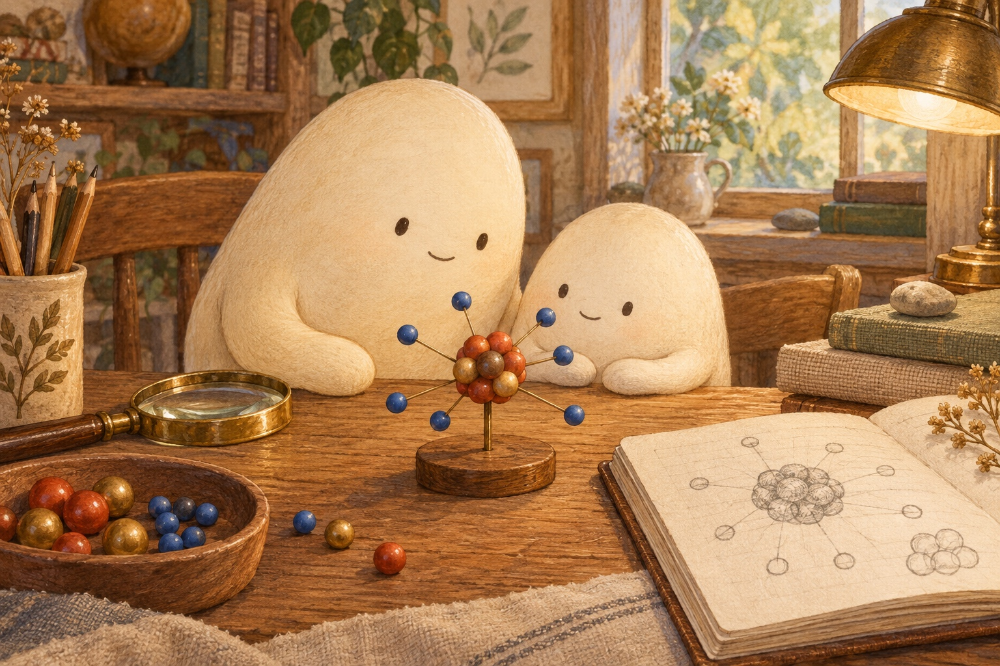
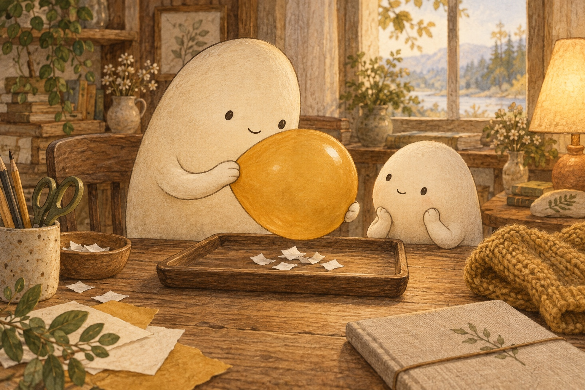
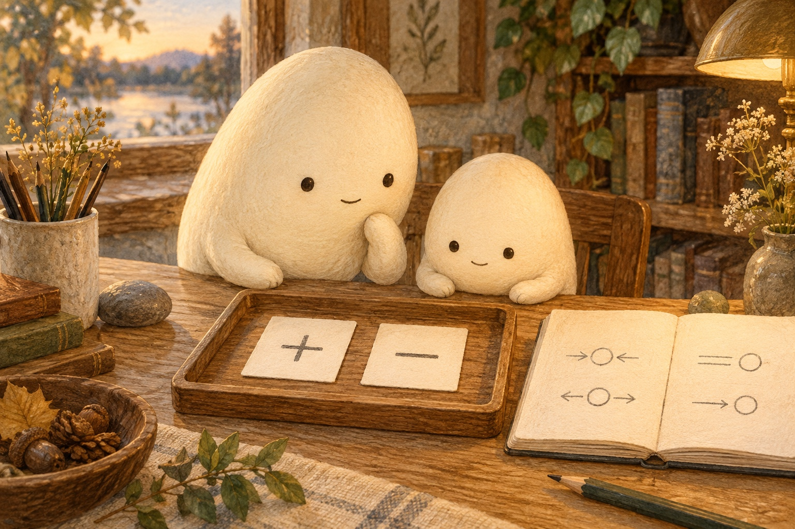
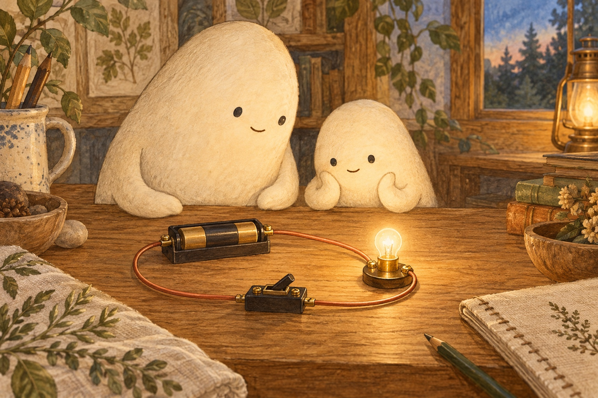
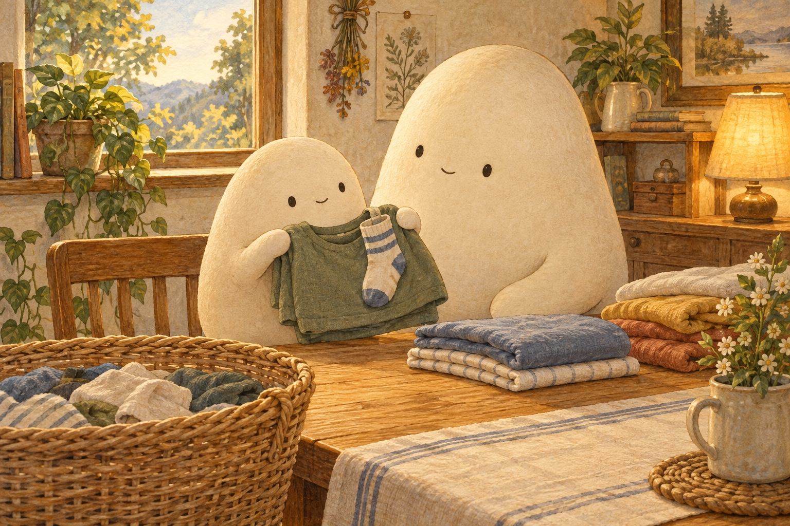
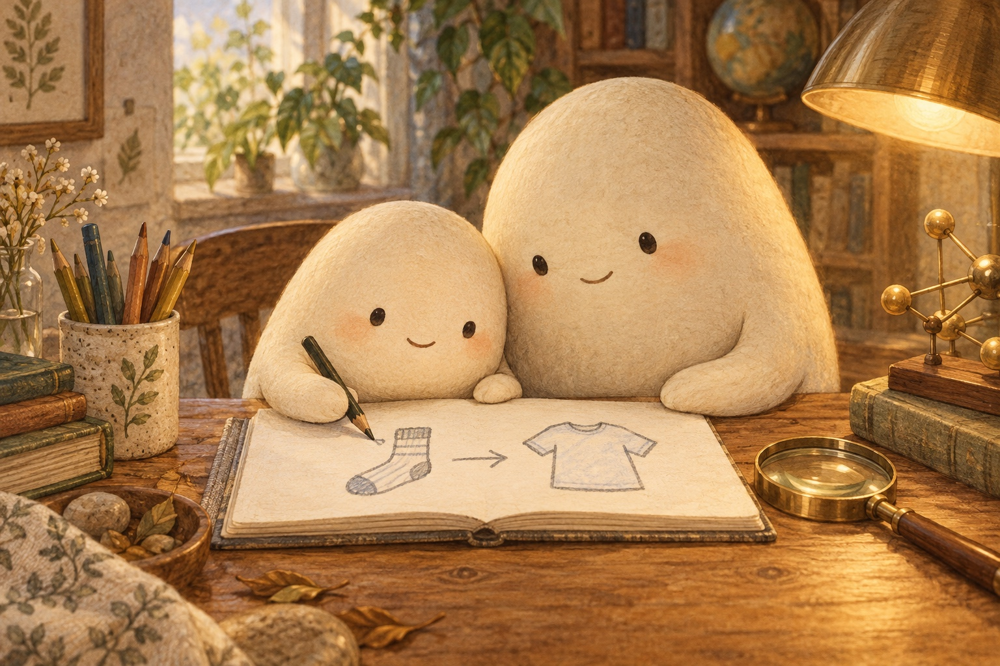

Where do the tiny bits go when a sock sticks to a shirt?

Where shall we look?
An atom has a nucleus with electrons around it.
What is an electron?
Find the small electron beads around the model’s center.
A little explanation & something to try
An electron is a tiny bit of matter carrying negative electric charge. It has far less mass than a proton or neutron. An atom has a central nucleus with protons and usually neutrons, and electrons moving around it. Their motion is not a set of perfect circles.
Try this. Point to the nucleus, then the electrons around it.

Rubbing some materials together can transfer electrons.
What changes when we rub a balloon?
A few light paper bits lift toward the balloon.
A little explanation & something to try
Rubbing a balloon on wool can transfer some electrons to the balloon. It gains negative charge; the wool loses electrons and becomes positive. Nearby paper has charges that shift a little, so the closer side is pulled toward the balloon.
Try this. With Big leading, rub a balloon on a sweater, then hold it near paper bits on a tray. Keep fingers out of outlets, and keep hands dry around plugs and switches. Big leads every demo.

Opposite charges pull together; like charges push apart.
When do charges pull or push?
The cards show a plus for positive and a minus for negative.
A little explanation & something to try
Opposite charges pull together. Two positive charges push apart, and two negative charges push apart. Losing some negative electrons can leave a material with more positive charge than negative charge.
Try this. Use a plus and a minus card to explain a pull; use two minus cards to explain a push.

In a closed circuit, electrons move through the wire.
Do electrons travel in a lamp’s wire too?
The small lamp has a complete wire loop back to the battery.
A little explanation & something to try
Yes. Some electrons can move through metal wires. A battery gives energy to a closed circuit so electric current flows and the lamp lights. Electrons are already in the wires; the lamp does not eat them. Static cling and current involve the same tiny bits moving in different ways.
Try this. Trace the kit’s complete loop from the battery through the lamp and back.
Where did the tiny bits go?
Electrons
Too small to see
Little Wonderer studied an atom model under the lamp. An atom is a tiny building block of matter. Its nucleus has protons and neutrons packed in the middle. Electrons move around the nucleus. These tiny bits carry electric charge and have much less mass than protons or neutrons.
Which parts are in the middle, and which move around it?
A few electrons move
Big rubbed a balloon on a wool sweater, then held it near paper bits. A few bits lifted. Rubbing can move some electrons from the wool onto the balloon. Electrons carry negative charge. The balloon now had extra electrons; the wool had fewer. The tiny bits had moved, not disappeared.
Where did the balloon’s extra electrons come from?
Pull or push
“Charge can be positive or negative,” said Big. Opposite charges pull toward each other. Like charges push apart. Nearby paper can be pulled even when its charges balance overall: the balloon nudges charges inside the paper a little out of place. That makes the nearer side pull toward it.
Why can a balloon pull paper before touching it?
A path through a wire
Next, Big closed a switch on a battery kit. The lamp lit. A wire is a thin metal path. Some electrons in metal can move along it. The closed circuit made a complete loop for electric current. The battery supplied energy; electrons were already in the wires. The lamp did not use them up.
Why does the wire need a complete loop?

A sock that stays
A sock stayed on a shirt when Little lifted it. “Static cling!” said Big. That means fabrics stick because of electric charge. As some fabrics rub and separate, electrons can move between them. The fabrics can end up with opposite charges. Electrons can also jump across a tiny gap as charge spreads out.
How is the clinging sock connected to the balloon?

Where did they go?
Little drew the sock and shirt, with an arrow for electrons moving between them. “The tiny bits were already there,” Little said. “Some changed places.” Big nodded. Little kept one question: “Where do the tiny bits go when a sock stops sticking?”
For a complete still story, download the foldable book.
Tiny bits, tens and ones
Add or subtract. Trade ten ones for one ten when you need to.
An atom has a nucleus with electrons around it.
Choose one problem and explain where you regrouped a ten.
1. Little sets out 27 electron-model beads, then adds 18 more. How many beads are on the tray?
27 + 18 =
A small hint
Add the ones: 7 + 8. Trade 10 ones for 1 ten.
2. Big has 64 beads for charge models and puts 28 into a bag. How many beads stay out?
64 − 28 =
A small hint
Trade 1 of the 6 tens for 10 ones. Now subtract 8 from 14 ones.
3. Little draws 36 electron dots along one model wire and 19 along another. How many dots are drawn altogether?
36 + 19 =
A small hint
Add 6 + 9 ones, then trade 10 ones for 1 ten.
4. A craft box has 82 paper bits for the balloon test. Little uses 47. How many bits remain in the box?
82 − 47 =
A small hint
Trade 1 ten so 2 ones becomes 12 ones. Subtract the ones, then the tens.
5. Big counts 46 small lamp-kit clips in one box and 37 in another. How many clips are there altogether?
46 + 37 =
A small hint
Add 6 + 7 ones. Keep 3 ones and carry 1 ten.
6. Little has 95 sock stickers for a static-cling notebook and uses 56. How many stickers are left?
95 − 56 =
A small hint
Trade 1 ten so 5 ones becomes 15 ones. Then subtract 6 ones.
Give the balloon test its words
Say one clear command, then draw or write it.
An atom has a nucleus with electrons around it.
First, …tell how to set out the model beads
Rubbing some materials together can transfer electrons.
Then, …tell how to hold the balloon near the paper
Static cling can follow electrons moving between fabrics.
Look for, …tell what to notice about a clinging sock
Draw a balloon near paper bits. Add an arrow to show what you notice.
SAY IT FIRST. THEN DRAW OR WRITE.
A temporary space. Copy your words before closing or reloading; they are not saved or sent.
rubholdnearballoonpaperelectronchargecling
Does your command tell what to do, using a word such as Rub, Hold, or Notice?
Tiny charges, gentle movement
A small move to follow
Use words, pointing, or a sketch. Where did the electrons start? Where are they now? What did the cards do?
You can pause here.
Follow the little charge counters
Predict. Will opposite charges pull together or push apart?
Arrange in words. Hang two paper cards above a tray. Set a wool cloth beside them. Each piece starts with four plus counters and four electron counters.
Activate. For opposite charges, move two electron counters from the left card to the right. For like charges, move two from the cloth to each card. Release the cards.
Notice. Opposite charges pull together. Like charges push apart. The twelve electron counters stay in the model; they only change places.
These counters help us follow charge across many atoms. Positive charge stays in nuclei. The counters show the rule; real materials may gain or lose different amounts.
Quiz
Answer key
Quiz 1
An electron carries negative electric charge.
Quiz 2
The model’s nucleus holds protons and neutrons. Electrons move around it.
Quiz 3
Rubbing can transfer some electrons from wool to the balloon. The balloon gains negative charge, and the wool loses electrons.
Quiz 4
Opposite charges pull toward each other. Like charges push apart.